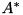
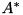
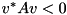
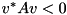
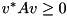

| Generic information, not Eigen-specific | Eigen-specific | |||||||
|---|---|---|---|---|---|---|---|---|
| Decomposition | Requirements on the matrix | Speed | Algorithm reliability and accuracy | Rank-revealing | Allows to compute (besides linear solving) | Linear solver provided by Eigen | Maturity of Eigen's implementation | Optimizations |
| PartialPivLU | Invertible | Fast | Depends on condition number | - | - | Yes | Excellent | Blocking, Implicit MT |
| FullPivLU | - | Slow | Proven | Yes | - | Yes | Excellent | - |
| HouseholderQR | - | Fast | Depends on condition number | - | Orthogonalization | Yes | Excellent | Blocking |
| ColPivHouseholderQR | - | Fast | Good | Yes | Orthogonalization | Yes | Excellent | Soon: blocking |
| FullPivHouseholderQR | - | Slow | Proven | Yes | Orthogonalization | Yes | Average | - |
| LLT | Positive definite | Very fast | Depends on condition number | - | - | Yes | Excellent | Blocking |
| LDLT | Positive or negative semidefinite1 | Very fast | Good | - | - | Yes | Excellent | Soon: blocking |
| ||||||||
| JacobiSVD (two-sided) | - | Slow (but fast for small matrices) | Excellent-Proven3 | Yes | Singular values/vectors, least squares | Yes (and does least squares) | Excellent | R-SVD |
| SelfAdjointEigenSolver | Self-adjoint | Fast-average2 | Good | Yes | Eigenvalues/vectors | - | Good | Closed forms for 2x2 and 3x3 |
| ComplexEigenSolver | Square | Slow-very slow2 | Depends on condition number | Yes | Eigenvalues/vectors | - | Average | - |
| EigenSolver | Square and real | Average-slow2 | Depends on condition number | Yes | Eigenvalues/vectors | - | Average | - |
| GeneralizedSelfAdjointEigenSolver | Square | Fast-average2 | Depends on condition number | - | Generalized eigenvalues/vectors | - | Good | - |
| ||||||||
| RealSchur | Square and real | Average-slow2 | Depends on condition number | Yes | - | - | Average | - |
| ComplexSchur | Square | Slow-very slow2 | Depends on condition number | Yes | - | - | Average | - |
| Tridiagonalization | Self-adjoint | Fast | Good | - | - | - | Good | Soon: blocking |
| HessenbergDecomposition | Square | Average | Good | - | - | - | Good | Soon: blocking |
Notes:
 is selfadjoint if and only if it is equal to its adjoint . The adjoint is also called the conjugate transpose. is positive definite if
is selfadjoint if and only if it is equal to its adjoint . The adjoint is also called the conjugate transpose. is positive definite if  for any non zero vector
for any non zero vector  . In the same vein, it is negative definite if  for any non zero vector
. In the same vein, it is negative definite if  for any non zero vector A selfadjoint matrix is positive semi-definite if  for any non zero vector . In the same vein, it is negative semi-definite if for any non zero vector